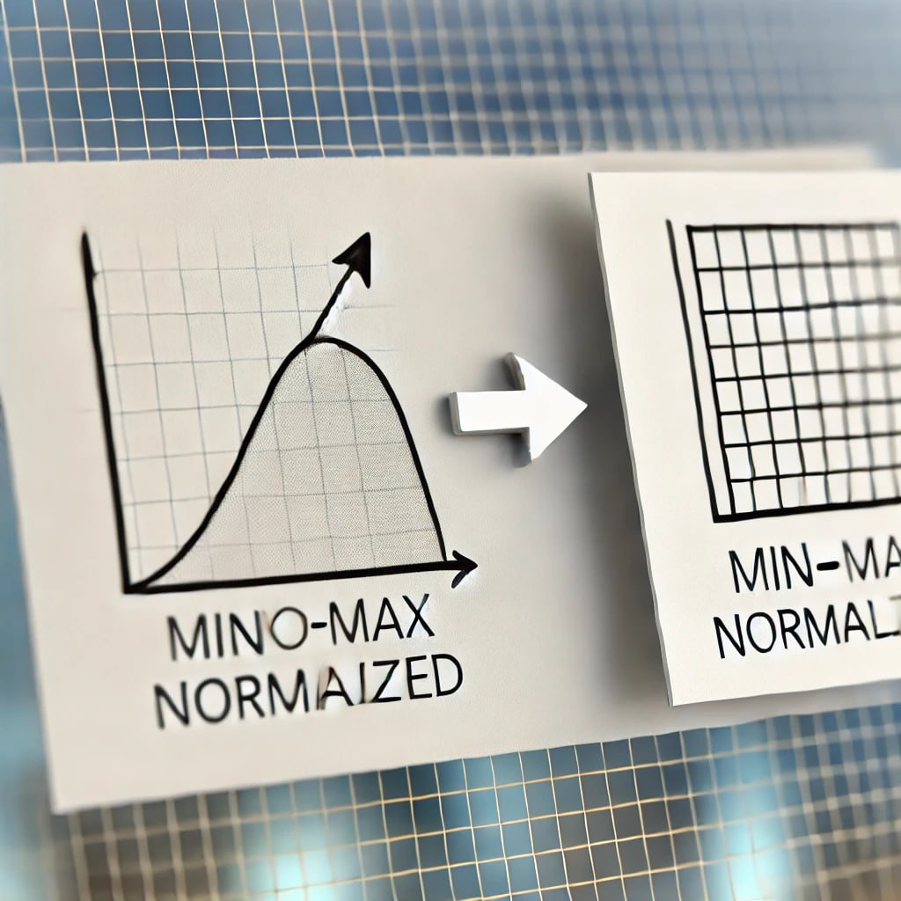

Data Normalization#

Data normalization is a crucial step in data preprocessing in order to standardize and scale data values across various ranges. This helps improve the performance and accuracy of machine learning models. Here are several different methods of normalization, each suited for different scenarios:
1. Min-Max Normalization#
Min-Max normalization scales data to a specified range, typically [0, 1]. The formula is:
[ X’ = \frac{X - X_{\text{min}}}{X_{\text{max}} - X_{\text{min}}} ]
Key Features:
Ideal for data that is uniformly distributed.
Useful when data needs to be constrained within a specific range.
2. Z-Score Normalization (Standardization)#
This method normalizes data by subtracting the mean and dividing by the standard deviation, making the data have a mean of 0 and a standard deviation of 1:
[ X’ = \frac{X - \mu}{\sigma} ]
Key Features:
Suitable for data with a normal distribution.
Effective for data with varying means and variances.
3. Decimal Scaling#
Decimal scaling normalizes data by moving the decimal point of the data values, ensuring they fall within a specific range. The formula is:
[ X’ = \frac{X}{10^j} ]
Where ( j ) is the number of digits of the largest absolute value.
Key Features:
Useful for data with values that vary across several orders of magnitude.
4. Max Abs Normalization#
This method normalizes data by dividing each value by the maximum absolute value, ensuring data lies within the range [-1, 1]:
[ X’ = \frac{X}{|X_{\text{max}}|} ]
Key Features:
Suitable for data with both positive and negative values.
5. Robust Scaler#
The robust scaler normalizes data by using the median and interquartile range (IQR):
[ X’ = \frac{X - \text{median}}{\text{IQR}} ]
Key Features:
Useful for data with outliers.
Reduces the impact of extreme values.
6. Log Transformation#
Log transformation applies the logarithm function to data values, reducing large differences in data scale:
[ X’ = \log(X + 1) ]
Key Features:
Suitable for data with non-normal distributions or large differences in values.
Commonly used for financial data or very large numbers.
7. Power Transformation#
This method applies power functions like Box-Cox or Yeo-Johnson transformations to normalize data:
Key Features:
Useful for data that doesn’t improve with log or square root transformations.
Helps in normalizing non-Gaussian distributions.
8. L2 Normalization#
In L2 normalization, the data vector is scaled such that the vector’s length equals 1. The formula is:
[ X’ = \frac{X}{|X|} ]
Key Features:
Effective for algorithms like KNN or SVM that rely on distances between data points.
Conclusion#
Choosing the right normalization method depends on the characteristics of the data and the algorithm being used. Proper normalization can lead to significant improvements in model performance by ensuring that features contribute equally to the model.
Data Normalization Methods#
In this example, we apply various normalization techniques on a dataset. The methods used are:
Min-Max Normalization: Scales the data between 0 and 1.
Z-Score Normalization: Standardizes the data with mean 0 and standard deviation 1.
Robust Scaler: Uses the median and IQR for scaling.
L2 Normalization: Scales the vector length to 1.
Below is the Python code to apply these methods on an example dataset:
import numpy as np
import pandas as pd
from sklearn.preprocessing import MinMaxScaler, StandardScaler, RobustScaler, Normalizer
# Example data
data = {
'Feature1': [200, 300, 400, 500, 600],
'Feature2': [20, 30, 10, 40, 25],
'Feature3': [5, 10, 15, 20, 25]
}
# Convert data to DataFrame
df = pd.DataFrame(data)
# Min-Max Normalization
min_max_scaler = MinMaxScaler()
min_max_normalized = min_max_scaler.fit_transform(df)
# Z-Score Normalization (Standardization)
zscore_scaler = StandardScaler()
zscore_normalized = zscore_scaler.fit_transform(df)
# Robust Scaler Normalization
robust_scaler = RobustScaler()
robust_normalized = robust_scaler.fit_transform(df)
# L2 Normalization
l2_normalizer = Normalizer(norm='l2')
l2_normalized = l2_normalizer.fit_transform(df)
# Convert all normalizations into a DataFrame for comparison
normalized_data = pd.DataFrame({
'Original Feature1': df['Feature1'],
'Original Feature2': df['Feature2'],
'Original Feature3': df['Feature3'],
'MinMax Feature1': min_max_normalized[:, 0],
'ZScore Feature1': zscore_normalized[:, 0],
'Robust Feature1': robust_normalized[:, 0],
'L2 Feature1': l2_normalized[:, 0]
})
# Display the DataFrame
normalized_data
| Original Feature1 | Original Feature2 | Original Feature3 | MinMax Feature1 | ZScore Feature1 | Robust Feature1 | L2 Feature1 | |
|---|---|---|---|---|---|---|---|
| 0 | 200 | 20 | 5 | 0.00 | -1.414214 | -1.0 | 0.994729 |
| 1 | 300 | 30 | 10 | 0.25 | -0.707107 | -0.5 | 0.994490 |
| 2 | 400 | 10 | 15 | 0.50 | 0.000000 | 0.0 | 0.998986 |
| 3 | 500 | 40 | 20 | 0.75 | 0.707107 | 0.5 | 0.996024 |
| 4 | 600 | 25 | 25 | 1.00 | 1.414214 | 1.0 | 0.998268 |
Normalization Results#
Below is the result of applying different normalization methods to the first feature of the dataset:
Min-Max Normalization: Transforms the data into a range between 0 and 1.
Z-Score Normalization: Standardizes the data with mean 0 and standard deviation 1.
Robust Scaler: Minimizes the influence of outliers by using the median and interquartile range.
L2 Normalization: Scales the vector so that its length equals 1.